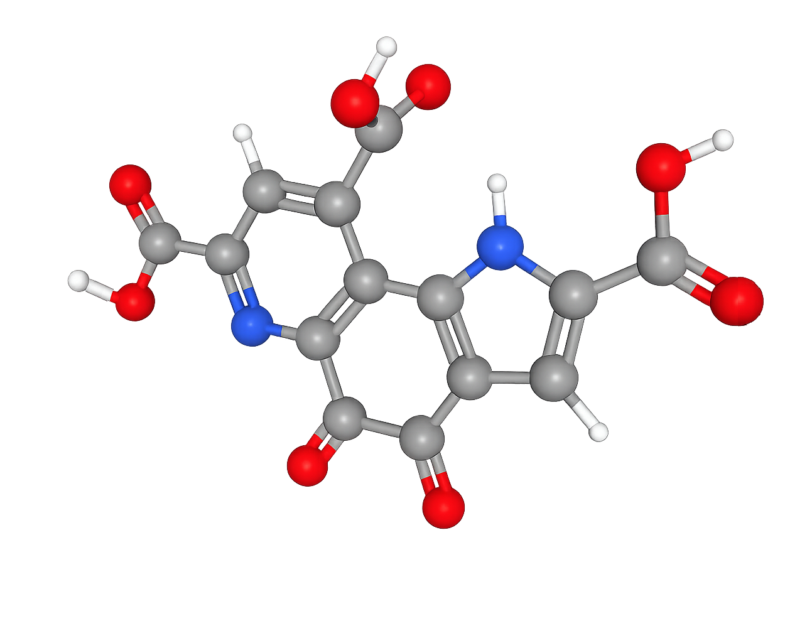

L-glicin társai: Urolithin-A & PQQ
A modern tudomány eszközei a sejtszintű energia és a hosszú élet szolgálatában.
Mi az a PQQ?
A PQQ (Pirrolochinolin-chinon) egy különleges molekula, amelyet a tudomány "mitokondriális építésznek" is nevez. Segíthet az oxidatív stressz csökkentésében és a sejtek megújulásában.
Hogyan működik?
- Új erőművek: Serkenti a mitokondriális biogenezist (új energiaforrások létrehozása).
- Agyvédelem: Támogatja az idegsejtek növekedését és egészségét.
- Energia: Segít a sejteknek hatékonyabban előállítani az ATP-t (energiát).

Mi az az Urolithin-A (UA)?
Az Urolithin-A a sejtjeink "molekuláris takarítója". Ez az anyag a bélflóránk közreműködésével jön létre (pl. gránátalmából), és a legfőbb feladata a sejtek megtisztítása a hibás elemektől.
Hogyan működik?
- Mitofágia: Beindítja a szelektív takarítást, eltávolítva a rosszul működő mitokondriumokat.
- Izomerő: Klinikai vizsgálatokban javította az izmok állóképességét.
- Sejtszintű fiatalítás: Frissíti a sejtek energia-állományát.

Hogyan dolgoznak együtt?
A szervezetünkben a Glicin, az UA és a PQQ egy precíziós gépezetként dolgozik össze. A folyamat lényege a teljes sejtszintű renoválás: az Urolithin-A eltakarítja a hibás alkatrészeket, a PQQ új energia-erőműveket épít, a Glicin pedig biztosítja a folyamatos karbantartást és védelmet.
Ez nem az a fajta energia, amit egy csésze kávétól kapsz. A koffein csak "kölcsönveszi" az energiát és pörgeti az idegrendszert. Ezzel szemben ez a hármas kombináció valós, biológiai feltöltődést ad: magát a sejtek "motorját" javítja meg, így a fáradtságérzet nem elnyomva lesz, hanem megszűnik az oka.
Mivel a mitokondriumok felelősek a cukor és a zsírok elégetéséért, működésük javítása közvetlen hatással van az anyagcserére is. A tapasztalatok és kutatások alapján a kúra jótékony hatással lehet az inzulinérzékenységre (vércukor problémák) és a keringési rendszerre (vérnyomás) is, hiszen a hatékonyabb sejtek kevesebb terhet rónak a szívre.
Hatások & Ajánlások
KINEK AJÁNLOTT?
50 év felettieknek
A mitokondriális funkció és az izomtömeg természetes védelmére.
Aktív életmódot élőknek
A sport utáni gyorsabb regeneráció és jobb állóképesség eléréséhez.
Fokozott szellemi terhelés esetén
A PQQ neuroprotektív hatása támogatja a mentális fókuszt.
NEM AJÁNLOTT / ÓVATOSSÁG
Terhesség és szoptatás
Nincs elegendő adat, ezért orvosi konzultáció nélkül nem javasolt.
Krónikus vagy daganatos betegség
Máj-, vese- vagy onkológiai kezelés alatt állóknak kötelező az orvosi egyeztetés.
Gyermekkor
Fejlődésben lévő szervezet számára orvosi kontroll nélkül nem ajánlott.